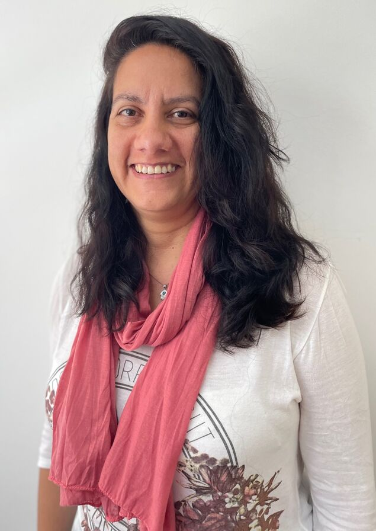
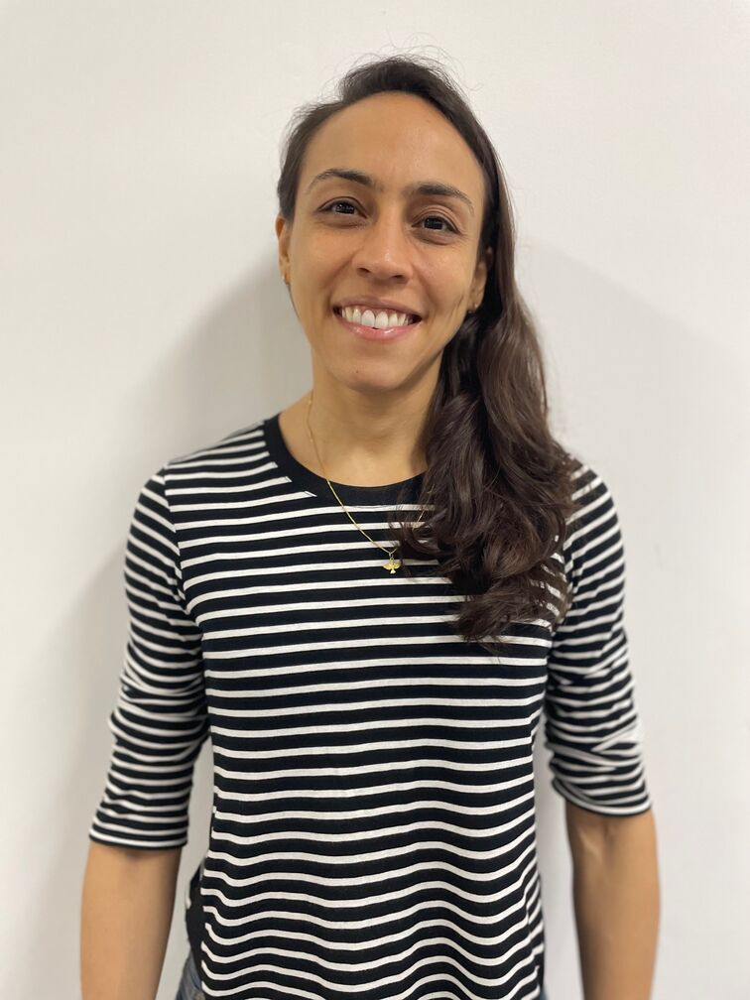
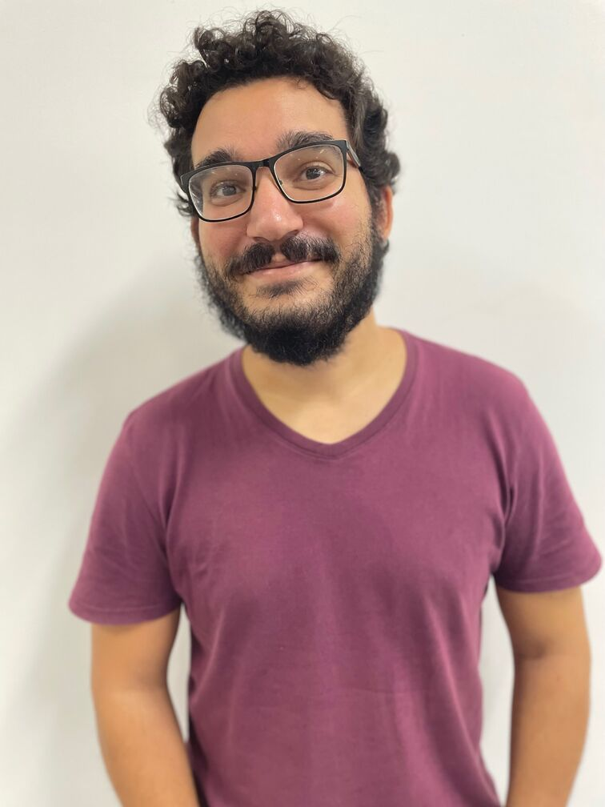

Nesta seção Simpósio faremos uma breve resenha de eventos organizados por membros da comunidade do Departamento de Matemática (DMAT) do Instituto de Matemática e Estatística (IME) da Universidade Federal da Bahia (UFBA) durante o período de janeiro a dezembro de 2025.
Iniciamos nossa retrospectiva destacando os eventos que conectaram o DMAT à fronteira do conhecimento, reunindo pesquisadores de diversas partes do mundo e fortalecendo a pós-graduação e a produção científica.
Realizado no dia 31 de janeiro de 2025, no Auditório do IME-UFBA, o evento “Formação de Professores de Matemática no Verão da UFBA” teve como um dos principais objetivos contribuir para a melhoria do ensino de Matemática na Educação Básica. Diante dos desafios apontados por índices nacionais, a atividade ofereceu um conjunto de palestras voltadas ao desenvolvimento de saberes práticos e estratégias pedagógicas inovadoras.
A organização foi uma parceria entre o Programa de Iniciação à Docência (PIBID-UFBA/Matemática) e o Mestrado Profissional em Matemática em Rede Nacional (PROFMAT-UFBA), sob a coordenação das professoras Graça Dominguez e Elaís Cidely.
A programação científica destacou-se pela abordagem de temas contemporâneos. O professor Rogério Steffenon (UNISINOS) proferiu a palestra “Belos Problemas de Matemática”, explorando o raciocínio lógico e o reconhecimento de padrões.
Em seguida, o professor Luciano Guimarães (FGV) discutiu “Problemas de Olimpíada na sala de aula”, apresentando técnicas estratégicas para o ambiente escolar. Encerrando o ciclo, o professor Krerley Oliveira (UFAL) apresentou o “NES - Novo Ensino Suplementar”, uma proposta inovadora para o Ensino Médio que integra Ciência de Dados e Inteligência Artificial.
As atividades demonstraram uma sólida articulação entre teoria e prática, vinculando-se tanto às disciplinas das Licenciaturas quanto às pesquisas do PROFMAT. Com um público de aproximadamente 70 participantes, o encontro foi marcado por trocas de experiências que incentivam o uso de abordagens criativas no contexto escolar.
O Encontro Nacional de Análise Matemática e Aplicações (ENAMA) teve sua 18a edição sediada no IME - UFBA entre os dias 2 e 5 de novembro de 2025. O tradicional evento anual, que ocorre desde 2005, reúne professores e pesquisadores de todas as regiões do Brasil e também do exterior, e tem o propósito de criar debates nas áreas de Análise Funcional, Análise Numérica, Equações Diferenciais Parciais, Ordinárias e Funcionais.
Na edição deste ano foram mais de 100 inscritos e 80 trabalhos apresentados, entre eles os convidados Alexandre Nolasco Carvalho (ICMC - USP), Enrique Zuazua (Friedrich-Alexander-Universität, Alemanha), Fernando Costa Jr (UFPB), Jaqueline Godoy Mesquita (Unicamp) e Sandra Moreira Neto (UEMA).
O encontro é reconhecido por unir novos e renomados pesquisadores e ter espaço convidativo para que todos participem, fato que influencia positivamente a carreira dos participantes, muitos dos quais sempre retornam ao evento. Entre as diversas palestras e minicursos apresentados ocorreram também atividades sociais, incluindo um jantar oficial e culinária típica.
Tanto a organização local, encabeçada por Arthur Cunha (UFBA) e composta por Henrique Costa (UFBA), Juan González (UFBA), Roseane Martins (UESC), Carlos Raposo (UFPA), Joilson Ribeiro (UFBA) e Leandro Araújo (UESB), quanto o comitê nacional, composto por Haroldo Clark (UFDPar), Joedson Santos (UFPB) e Sandra Malta (LNCC), foram elogiados pela realização do evento.
Os trabalhos apresentados no congresso farão parte de um volume especial da revista Matemática Contemporânea (https://mc.sbm.org.br/) da SBM, que tem publicação prevista para a semana anterior à próxima edição do evento, confirmada para 2026 na Universidade Federal de Juiz de Fora (MG). Para mais informações sobre o ENAMA, acesse https://www.enama.org.
Mantendo a tradição de promover a excelência e a integração na comunidade matemática, o X Encontro da Pós-Graduação em Matemática da UFBA (X EPGMAT) foi realizado entre os dias 24 e 28 de novembro de 2025. Este evento, que celebrou sua décima edição, é direcionado a docentes, pesquisadores e estudantes de Mestrado (Acadêmico e Profissional) e Doutorado em Matemática da UFBA e de outras instituições, e incentiva também a participação de discentes da graduação.
O objetivo principal do EPGMAT é a divulgação das áreas de pesquisa dos programas de Pós-Graduação em Matemática vinculados ao Instituto de Matemática e Estatística (IME-UFBA) e servir como meio de interação entre a comunidade interna e o público externo. A participação do PROFMAT (Mestrado Profissional em Matemática em Rede Nacional), integrada a partir da edição anterior, foi mantida nesta décima edição.
A abertura do Encontro contou com a participação de representantes institucionais da UFBA, incluindo o Pró-Reitor de Pesquisa e Pós-Graduação , professor Ronaldo Oliveira, o Diretor do IME, professor Kleyber Mota, e os professores Evandro Santos (coordenador do PROFMAT), Cristina Lizana (coordenadora do Mestrado) e Benigno Alves (vice-coordenador do Doutorado). Tais representantes realizaram uma breve apresentação da pesquisa e dos programas de pós-graduação em Matemática da UFBA, destacando o papel da UFBA como um centro ativo de pesquisa do Brasil.
O X EPGMAT, que busca enriquecer o ambiente de ensino e pesquisa na pós-graduação, consolidou-se ainda mais como um fórum para a difusão científica, oferecendo palestras, minicursos, e sessões de comunicação oral e pôsteres.
Além de um minicurso na área de Sistemas Dinâmicos, a programação de 2025 apresentou uma ampla gama de temas, com palestras, por exemplo, sobre “Teoria Abstrata dos Modelos: sobre esboços e instituições”, e “Ferramentas de IA para Aprender e Criar”. As discussões de pesquisa avançadas foram enriquecidas com contribuições de docentes e estudantes da UFBA, e pesquisadores convidados externos, como Keti Tenenblat da UNB, Zaqueu Ramos da UFS e Luciana Salgado da UFRJ.
Um aspecto relevante nesta edição, que reflete uma abordagem de tópicos centrais do ambiente acadêmico atual, foi a inclusão de uma Mesa Redonda intitulada “Saúde Mental na Pós-Graduação: Ações, Desafios e Caminhos Possíveis”, que levantou discussões sobre o tema e apresentou iniciativas desenvolvidas na UFBA. A mesa contou com a presença das professoras Denise Vieira (Chefe de Gabinete da UFBA) e Martha Macedo (Coordenadora do PSIU-UFBA), que compartilharam ações e desafios na construção de uma universidade mais acolhedora e saudável.
Os estudantes de Doutorado em Matemática da UFBA apresentaram 16 Comunicações Orais, com pesquisas que variaram de “Caracterização da Semi-Hiperbolicidade via Medida de Máxima Entropia” a “Estimativas de grandes desvios para o passeio aleatório no Toro”. O PROFMAT também contribuiu com duas comunicações orais, e discentes da Graduação e Pós-Graduação tiveram a oportunidade de apresentar suas pesquisas em sessões de Pôsteres.
Em síntese, o X EPGMAT aprofundou a disseminação do conhecimento em Matemática, reforçando o papel de liderança do Programa de Pós-Graduação em Matemática da UFBA, ao mesmo tempo que abordou questões relevantes do ambiente acadêmico atual, como o bem-estar mental dos integrantes dos programas.
Para mais informações sobre o Encontro da Pós-graduação em Matemática da UFBA, acesse https://encontropgmat.ufba.br.
O Seminário de Iniciação Científica do DMAT, que já havia acontecido em 2021 e 2022, em formato online e sob organização do Programa de Pós-Graduação em Matemática da UFBA, foi retomado no primeiro semestre de 2025 por iniciativa dos alunos de graduação que participam de projetos de IC, com apoio da professora Cristina Lizana e do Programa de Pós-Graduação em Matemática. Mais informações sobre as edições anteriores estão disponíveis em https://dgmp.mat.ufba.br/ICmat/seminarioICmat.html.
A proposta do seminário é ser um espaço descontraído e colaborativo, desenvolvido pelos estudantes e voltado para eles mesmos, onde cada participante pode apresentar seus tópicos de estudo e compartilhar experiências com colegas. Além de valorizar o trabalho desenvolvido em cada projeto de iniciação científica, o seminário busca estimular a troca de ideias e promover o amadurecimento acadêmico e científico dos alunos.
Em 2025, os encontros aconteceram quinzenalmente e somaram 12 apresentações. A organização ficou a cargo dos próprios estudantes, sempre com a supervisão da professora Cristina Lizana. No primeiro semestre, os doutorandos Leydiane Campos e Elivan Neri Lima organizaram os encontros junto com o discente da graduação Mateus de Santana. Já no segundo semestre, Samuel Figueiredo (graduação) assumiu a coordenação, com apoio de Tácio Fernandes (mestrado) e novamente Elivan Neri Lima (doutorado).
O seminário seguirá em 2026, trazendo uma nova programação e mantendo o compromisso de fortalecer a integração e o desenvolvimento científico dos estudantes. Fique atento às redes sociais do DMAT!
Voltando o olhar para a nossa comunidade, o ano também foi marcado por projetos de extensão e vivência acadêmica que fortalecem a memória institucional e a formação integral dos nossos estudantes.
O ano de 2025 marcou um período de intensa articulação para o projeto de extensão PECMat (Egressos dos cursos de Matemática da UFBA), consolidando seu papel fundamental na vida acadêmica do Instituto. O projeto avançou para além do mapeamento de ex-estudantes, transformando-se em um espaço vibrante de reconhecimento de trajetórias e troca de experiências.
Os Bate-Papos com Egressos apresentaram um panorama inspirador, conectando gerações. Tivemos a participação de lideranças institucionais, como o atual Diretor do IME, Prof. Kleyber Mota, e a Profa . Célia Gomes (aposentada), ex-diretora do antigo Instituto de Matemática, que compartilharam suas visões sobre a gestão e a evolução da carreira acadêmica.
Além da gestão, o projeto destacou a pesquisa em Educação Matemática e a prática docente. Egressos como a Profa . Jamille Vilas Bôas (IFBA/Salvador) trouxeram debates sobre o ensino, enquanto o egresso Paulo Malta (IFBA/Porto Seguro) ministrou uma oficina prática sobre demonstrações do Teorema de Pitágoras, integrando formação técnica e compromisso extensionista.
Um momento de grande emoção foi a valorização da memória institucional, com a homenagem à Profa . Elinalva Vergasta (Lina), figura central na história do Laboratório de Ensino (LEMA), atualmente aposentada. O egresso Fellipe Antônio conduziu o debate “Minha Vida Como Rato de Laboratório”, destacando o impacto pedagógico e afetivo do LEMA na formação de gerações.
Outro marco foi o encontro com o Prof. José Fernandes (aposentado), realizado durante o XVIII EMAT. O bate-papo revisitou sua trajetória e contribuições decisivas para a pós-graduação, promovendo um valioso cruzamento entre docentes aposentados, professores na ativa e estudantes.
A conexão com o presente também se deu nas recepções realizadas no início de cada semestre do ano, onde o público, especialmente os calouros, foi acolhidos com os bate-papos intitulados “A minha vida tem lógica!” e “A dinâmica caótica para se tornar um matemático”, ministrados, respectivamente, pelos professores Darllan Pinto (Chefe do DMAT) e Kleyber Mota.
Com uma equipe dedicada de docentes e estudantes atuando na execução das atividades, sob a coordenação da Profa . Elaís Cidely, as discussões abordadas também se voltaram para temas como inclusão de meninas na Matemática, vivências e trajetórias nas olimpíadas de Matemática, empreendedorismo, desafios emocionais da carreira, entre outros.
Para ampliar o acesso, os encontros foram gravados e disponibilizados no canal do DMAT no YouTube. Para mais informações, acesse o perfil no Instagram: @pecmatufba.
O Seminário Café Cultural, coordenado pelos professores Cristina Lizana e Roberto Sant’Anna, manteve sua agenda ativa e diversificada em 2025, reafirmando seu compromisso com a formação complementar e o debate multidisciplinar.

O ano iniciou com uma edição especial em janeiro, recebendo os professores visitantes Antonio Caminha (UFC) e Ana Paula Chaves (UFG) para uma sessão dupla sobre Geometria e Teoria dos Números. Outro momento de destaque foi a celebração do “May 12 - Celebrating Women in Mathematics”, que contou com a exibição presencial do documentário sobre a vida da medalhista Fields, Maryam Mirzakhani.
A programação de 2025 caracterizou-se por um forte diálogo com outras áreas, promovendo mesas redondas e palestras que integraram a Matemática com a Biologia (em parceria com o IBIO-UFBA), a Física (Projeto Física Fora da Caixinha) e a Educação Inclusiva (Projeto Modelando Matemática/ICTI). O seminário também trouxe respostas lúdicas para questionamentos clássicos, com destaque para a palestra “Professora, para que serve a matemática?”, ministrada pela Profa . Vanessa Barros. Nela, a docente explorou a geometria e o cálculo no cotidiano, analisando desde o formato de batatas chips até o design ideal de copos para conservar a temperatura de bebidas.

As atividades ocorreram no Auditório do IME, muitas com transmissão simultânea, garantindo o acesso ampliado ao conteúdo. Para mais informações e acesso às gravações, visite http://www.cafeculturaldmat.ime.ufba.br.
Com a provocação “Como podemos enxergar a matemática?”, ocorreu no dia 09 de julho de 2025 o I Seminário de Visualização e Matemática Computacional (SVMC). O evento marcou a primeira grande ação pública do recém-criado Núcleo de Estudos em Matemática Pura e Aplicada (NEMPA).
Sob a coordenação do Prof. Roberto Sant’Anna e com apoio da equipe técnica do núcleo, o seminário reuniu mais de 60 participantes no Auditório do IME. A programação contou com palestras ministradas pelos professores do DMAT Vinícius Mello, Carlos Siqueira, Perfilino Júnior e Roberto Sant’Anna, oferecendo um panorama abrangente da área.
As discussões transitaram desde uma perspectiva histórica da visualização matemática até a geometria fractal da natureza e o processamento de imagens digitais, culminando na demonstração prática de animações matemáticas usando a biblioteca Manim em Python. O sucesso de público demonstrou o potencial desta área na UFBA, estabelecendo as bases para futuros projetos de computação científica e divulgação visual.
Encontros de pesquisa de Matemática são comuns e muito abrangentes, tendo como público alvo professores, pesquisadores e alunos de pós-graduação. Tão importantes quanto são os eventos voltados para aqueles que estão iniciando sua vida acadêmica na matemática em cursos de graduação, seja no bacharelado ou em licenciaturas. Para tanto, a 19a edição do Encontro de Matemática (EMAT) aconteceu nos dias 10 a 14 de novembro de 2025.
O evento tem como finalidade divulgar e discutir os cursos de matemática da UFBA e de outras instituições. Esta edição contou com uma vasta programação nos três turnos (manhã, tarde e noite), permitindo que os alunos matriculados em cursos noturnos também tivessem oportunidade de participar.
Com cerca de 100 participantes credenciados até o terceiro dia de evento, a programação ofereceu uma imersão de aproximadamente 9 horas diárias de atividades. No total, foram realizadas 17 palestras, 3 minicursos, além de 5 mesas-redondas, 2 oficinas e sessões de pôsteres para a exposição de trabalhos científicos, possibilitando a troca de experiências acadêmicas, o debate de temas atuais da matemática e reflexões sobre pesquisa e formação docente e também reforçando a relevância do EMAT para a formação acadêmica e científica dos participantes.
A organização desta edição foi inteiramente formada por alunos do IME, mobilizando um total de 43 estudantes em diversas frentes de trabalho, sob a liderança de uma comissão central composta pelos discentes Amanda dos Santos, Clara Rios, Gabriel Siron, Jay Victor Cintra, João Victor Delgado, Larissa de Jesus Mota e Sergio Samuel Figueiredo. Para sua realização, o EMAT contou com o apoio crucial da PROEXT (Pró-Reitoria de Extensão), além do suporte do Diretório Acadêmico, do Departamento de Matemática e de doações de 29 professores da unidade.
Durante o evento, ocorreram em paralelo edições especiais de outros projetos da casa: o Café Cultural, com uma mesa redonda formada por alunos de graduação e pós-graduação discutindo os primeiros passos na pesquisa matemática; e o PECMat, em que o Prof. José Fernandes teve oportunidade de compartilhar sua jornada pessoal e profissional no mundo da Academia e da Matemática.
Acompanhe as redes sociais do evento em @ematufba para ficar em dia com as edições futuras!
Em junho de 2025, o grupo dos professores da área de Educação Matemática do Instituto de Matemática e Estatística da UFBA (IME/UFBA), Graça Dominguez, Elias Santiago, Kátia Lima e Diogo Rios, deu início ao projeto de ensino e pesquisa intitulado Seminários de Educação Matemática. A iniciativa é direcionada para estudantes da graduação em Licenciatura em Matemática, profissionais da Educação Básica, estudantes de outros cursos de graduação ou pós-graduação interessados em estabelecer relações com o tema e compreender o que é “fazer ciência” nesse campo científico.
O projeto configura-se como um espaço colaborativo para estudos e reflexões sobre as diversas subáreas da Educação Matemática. Sob a mediação dos professores coordenadores, o grupo promove estudos dirigidos, minicursos e momentos de socialização de saberes. Mais que um espaço para difusão de trabalhos da área, o seminário funciona como um fomentador de novas pesquisas, ao suscitar o interesse dos participantes pelas temáticas abordadas, as quais podem fundamentar futuros trabalhos e propostas de pesquisa em suas trajetórias acadêmicas.
Nesses primeiros meses de existência, o grupo estabeleceu uma rotina de reuniões semanais, abordando tópicos fundamentais. Entre os debates realizados, destacam-se os materiais curriculares, o fazer docente, a trajetória histórica do currículo de Matemática no Brasil e a institucionalização da Educação Matemática como um campo científico no país. O projeto também se mantém atento às transformações tecnológicas contemporâneas, tendo discutido as complexas relações entre a Inteligência Artificial e o ensino de Matemática.
Para 2026, a coordenação planeja expandir o alcance das discussões e debates. Entre as metas estabelecidas, está o convite a pesquisadores externos para ministrarem oficinas e/ou minicursos. O objetivo é oferecer perspectivas complementares e aprofundar os temas sugeridos pelos próprios participantes, consolidando o seminário como um polo dinâmico de formação e investigação científica na área de Educação Matemática no Departamento de Matemática da UFBA.
Para mais informações sobre os Seminários, acesse o instagram do DMAT: @dmatufba.
Para além dos muros da universidade, o departamento ampliou seu impacto social, levando a matemática de forma lúdica, inclusiva e desafiadora para centenas de jovens da educação básica, promovendo a diversidade e a história na descolonização do conhecimento.
Entre os dias 26 de janeiro e 2 de fevereiro de 2025, Salvador tornou-se a capital nacional da matemática ao sediar a 28a Semana Olímpica. O evento, promovido pela Associação da Olimpíada Brasileira de Matemática (AOBM), reuniu centenas de estudantes medalhistas da OBM e do Torneio Meninas na Matemática (TM²) de todo o Brasil para uma imersão de alto nível.
Embora seja um evento nacional, a realização desta edição contou com o suporte logístico e organizacional fundamental do Programa de Extensão Matemática Olímpica da UFBA. Sob a coordenação do Prof. Samuel Feitosa (DMAT-UFBA) e com o apoio local do professor Roberto Sant’Anna, a equipe de extensão — incluindo docentes e discentes como Carlos Rocha, Sara Sousa e Elaís Cidely — garantiu o sucesso das atividades.
A programação incluiu aulas avançadas, palestras de orientação acadêmica e a tradicional “Vingança Olímpica”, uma competição divertida onde os alunos criam problemas para os professores resolverem. O encerramento foi marcado pela Cerimônia de Premiação, que contou com a presença de autoridades da matemática brasileira, como o Prof. Carlos Gustavo Moreira (Gugu), e do Diretor do IME-UFBA, Prof. Kleyber Mota.
O evento também promoveu um rico intercâmbio entre educadores. Momentos de fala conjunta, como o protagonizado pelo coordenador Samuel Feitosa ao lado de Carlos Gomes (UFRN), Rogério Steffenon (UNISINOS), reforçaram a importância da colaboração interinstitucional para o fortalecimento das olimpíadas no país.
Inspirados pelo sucesso deste encontro e visando fomentar ainda mais a cultura olímpica no Estado, o DMAT-UFBA anuncia a criação da 1a Semana Olímpica da UFBA, prevista para fevereiro de 2026. O novo evento terá como foco a integração e o incentivo aos talentos da Bahia, consolidando o trabalho que vem sendo realizado pelos interessados na área em todo o Estado.
Ao longo de 2025, o Instituto de Matemática e Estatística (IME-UFBA) abriu suas portas para receber centenas de estudantes da Educação Básica por meio da ação de extensão Aulão Olímpico: Superando Desafios em Matemática. Coordenada pelo Prof. Roberto Sant’Anna, a iniciativa consolidou-se como uma ponte vital entre a escola e a universidade, tendo como objetivo principal não apenas o treinamento técnico, mas a desmistificação do ambiente acadêmico e o fortalecimento da cultura olímpica em escolas públicas de Salvador e Região Metropolitana.
Diferente de treinamentos tradicionais focados apenas na repetição, os encontros se destacaram pelo caráter multidisciplinar e humanista. A programação integrou o rigor da Matemática com atividades culturais inovadoras, como a parceria com o Projeto de Extensão Cineclube de História da Matemática e a realização de oficinas de teatro. Estas últimas visaram o desenvolvimento da oratória e a desinibição, competências essenciais para a formação integral dos jovens talentos.
A diversidade de atividades incluiu também uma imersão científica durante a Semana Nacional de Ciência e Tecnologia (SNCT), onde os estudantes puderam visitar o Planetário da UFBA, conectando a matemática à astronomia e expandindo seus horizontes científicos.
Um ponto alto e distintivo do projeto foi a abordagem socioemocional. Reconhecendo que o desempenho acadêmico está atrelado ao bem-estar mental, diversas edições contaram com palestras de psicólogos, como a realizada em outubro com a psicóloga Taíris Araújo. O foco na gestão da ansiedade pré-prova preparou os alunos não apenas intelectualmente, mas emocionalmente para os desafios de competições como a OBMEP e o ENEM.
O ano encerrou com uma expansão ambiciosa das fronteiras do projeto: a organização da “Seleção Baiana” para a olimpíada internacional Formula of Unity, em parceria com a Universidade de São Petersburgo (Rússia). Esta iniciativa inédita permitiu que estudantes da rede pública baiana tivessem contato com problemas desafiadores de padrão internacional, colocando a Bahia no mapa da matemática global nesta área.
O projeto contou com a participação engajada de diversas instituições, como o Colégio da Polícia Militar (unidades Candeias e Dendezeiros), o Colégio Estadual Central e o Colégio Estadual Anna Junqueira Ayres Tourinho - CEAJAT (São Francisco do Conde), reafirmando o IME-UFBA como um espaço de pertencimento e transformação social para a juventude baiana.
Para acompanhar a agenda dos próximos aulões, acesse @mat.olimpica.
O ano de 2025 foi marcado por grandes celebrações do mérito acadêmico, reafirmando o compromisso da UFBA e do DMAT com a valorização da ciência na Educação Básica. Mais do que a entrega de medalhas, estes eventos representaram o ápice de um trabalho contínuo de inclusão e descoberta de talentos, promovendo o encontro emocionante entre a universidade, as escolas públicas e as famílias dos estudantes.
No dia 22 de julho, o Salão Nobre da Reitoria sediou a Cerimônia Regional da 19a Olimpíada Brasileira de Matemática das Escolas Públicas (OBMEP) - Regional BA01. O evento solene, sob coordenação do Prof. Roberto Sant’Anna, contou com a presença do Vice-Reitor em exercício, Prof. Penildon Silva Filho, e diretores da universidade. A presença massiva da comunidade escolar celebrou um resultado expressivo da nossa região, que acumulou 77 medalhas nacionais e 229 medalhas regionais, refletindo a capilaridade e a força do ensino de matemática na Bahia.
Para além dos números, a cerimônia buscou integrar diferentes formas de conhecimento. Um destaque especial desta edição foi a união entre Arte e Ciência. A solenidade foi abrilhantada por apresentações culturais do Maestro José Maurício Brandão (piano) e da soprano Gisele Nino, que trouxeram leveza e sofisticação ao ambiente, emocionando o público presente e mostrando que a matemática dialoga com todas as esferas da cultura humana.
Encerrando o ciclo anual, em 04 de dezembro, ocorreu a premiação da 9a Olimpíada de Matemática do Estado da Bahia (OMEBA). Organizada pelos professores Henrique Barbosa, Roberto Sant’Anna e Samuel Feitosa, a cerimônia reuniu estudantes de diversas regiões do Estado, da capital ao interior. Foram premiados 11 medalhistas de ouro, 20 de prata e 33 de bronze. Este evento consolidou a competição como uma referência de excelência estadual e um incentivo fundamental para que os jovens talentos baianos, muitas vezes descobertos em escolas distantes dos grandes centros, percebam a UFBA como sua futura casa.
O coletivo Ondjango Asili, braço do projeto de extensão Jogos Africanos e Ensino de Matemática, do DMAT, é coordenado pela Profa . Simone Moraes e integrado por estudantes de graduação da UFBA e professores da Educação Básica. Em 2025, reafirmou seu protagonismo na promoção de um ensino de Matemática inclusivo e antirracista. Reconhecido por suas ações significativas na descolonização do ensino de Matemática, o coletivo manteve sua filosofia de criar espaços de (re)união, troca e criação, utilizando jogos e elementos culturais africanos para fundamentar práticas pedagógicas no contexto da Lei 10.639/03.
Após a aprovação do projeto Ananse — Tecendo sabedoria na matemática com jogos e elementos culturais africanos, em dezembro de 2024 pelo edital Matemática nos finais do Ensino Fundamental do Itaú Social, também coordenado pela professora Simone, o coletivo iniciou o ano promovendo a Exposição dostrabalhos criados na ACCS — Cultura e Jogos Africanos no Ensino da Matemática. Na ocasião, os estudantes apresentaram os trabalhos por eles desenvolvidos e os participantes tiveram a oportunidade conhecer e experimentá-los.
Em maio e junho, foram promovidas as Oficinas Ananse — Tecendo Sabedoria com Matemática, no contexto do projeto do Itaú Social, em diversas escolas de Salvador, Lauro de Freitas e Camaçari. Nas atividades, os estudantes tiveram a oportunidade de explorar conceitos matemáticos de forma lúdica e conectada à ancestralidade africana, por meio de jogos e curiosidades africanas.
Em julho, o coletivo recebeu a equipe do Itaú Social para uma série de atividades no IME-UFBA, em que foram realizadas oficinas de Geometria Sona e jogos como Mbomge e Unxantathu, contando com a participação de 110 estudantes e professores da rede pública. As atividades dessa visita foram documentadas em vídeo (https://youtu.be/Ijp9eACGMg8) e na coletânea de projetos (https://encurtador.com.br/ebook_itau), disponíveis online.
O coletivo também marcou presença em importantes fóruns científicos e educativos, como o V COPENE Nordeste — ministrando a oficina “Nea onnim no sua a, ohu” (Aquele que não sabe, pode aprender), e o Encontro Regional da OBMEP em Salvador, no qual apresentou a Oficina Ananse e os instrutores tiveram a rica experiência de trabalhar com estudantes que se mostraram surpresos e curiosos sobre as informações acerca da cultura africana.
No mês de novembro, afim de promover atividades unindo conhecimento, matemática e diversão, o coletivo realizou novas visitas a escolas aplicando uma oficina de construção de jogos da família Mancala, assim como as oficinas criadas pelos estudantes na disciplina ACCS.
O ciclo anual encerrou-se em 28 de novembro com a 3a Black Math Friday. Conectado à filosofia Sankofa — que ensina a importância de olhar para o passado para construir o futuro — o evento celebrou o Novembro Negro no Auditório Nadja Viana (PAF 1) e no saguão do IME/UFBA. A celebração incluiu a apresentação das realizações e trabalhos do coletivo durante o ano, painéis com atividades desenvolvidas por bolsistas e colaboradores, e um grande torneio de jogos africanos, promovendo a interação entre estudantes e professores em um ambiente de aprendizado e diversão.
As atividades do coletivo mostram que o ensino da Matemática pode ser uma ferramenta de transformação social quando valoriza os saberes africanos como elementos centrais do processo educativo. Ao integrar o rigor matemático aos saberes ancestrais, as ações de 2025 fortaleceram uma proposta educativa fundamentada na equidade e na valorização da identidade, refletiram a resistência e a perseverança do coletivo, além de reafirmarem seu papel na construção de um ensino de Matemática que respeite e celebre a cultura e a história africana e afro-brasileira.
A importância do trabalho foi amplamente reconhecida durante o seminário de lançamento do “Compromisso Nacional Toda Matemática” em dezembro de 2025, realizado no Rio de Janeiro. Na ocasião, a professora Simone Moraes recebeu uma placa em homenagem pelo impacto do projeto de extensão Jogos Africanos e Ensino de Matemática, em frente ao coletivo Ondjango Asili.
Conheça as atividades do coletivo acessando o site https://ondjangoasili.com/ e o perfil @ondjango.asili no Instagram.

Cristina Lizana é venezuelana, com graduação e mestrado em Matemática pela Universidad de Los Andes-ULA (Venezuela), e doutorado em Matemática pelo IMPA (Brasil). Foi professora da ULA(2004-2017) e trabalha na UFBA desde 2018. Pesquisa na área de Sistemas Dinâmicos, atuando principalmente em Dinâmica Parcialmente Hiperbólica e mapas robustamente transitivos. Atualmente, é a coordenadora do Programa de Pós-graduação em Matemática. O seu hobby é a fotografia e a estreita relação desta com a matemática.

Elaís Cidely é baiana, nascida na cidade de Macaúbas. Possui graduação e mestrado em matemática pela UFBA, doutorado em matemática pelo IMPA e, desde 2015, é professora do IME-UFBA. Sua área de pesquisa é Sistemas Dinâmicos, com ênfase em Teoria Ergódica. Atualmente, é coordenadora geral do projeto de extensão PECMat, e atua em diversos outros projetos do DMAT. Na adolescência, tocou bateria em uma banda do colégio. Durante o doutorado, tocou alfaia em um grupo carioca de maracatu. E desde 2021, passou a vivenciar o exercício físico como uma agradável e indispensável opção de lazer.

Henrique da Costa é mineiro, cursou graduação e pós-graduação no ICMC-USP em São Carlos, interior de São Paulo, e está na UFBA em Salvador desde 2016. Atua na área de pesquisa em análise, mais precisamente sistemas dinâmicos não-lineares e equações diferenciais parciais. Estuda piano e jogos de cartas e tabuleiro como hobby. Foi cabeludo durante a pandemia, no entanto não se atreveu a ser padeiro.

Roberto Sant’Anna é nascido e criado em Salvador, Bahia. É doutor em Matemática Pura pela UFBA e atualmente é professor adjunto no Instituto de Matemática Estatística da UFBA e também Coordenador Regional da OBMEP. Tem realizado pesquisas na temática de Otimização Ergódica, dentro da área de Sistemas Dinâmicos e também tem atuado em diversos projetos tendo em vistas a divulgação da Matemática. Nas horas vagas, é amante da música e busca através dela se expressar por meio do teclado ou piano, instrumentos que tanto admira.